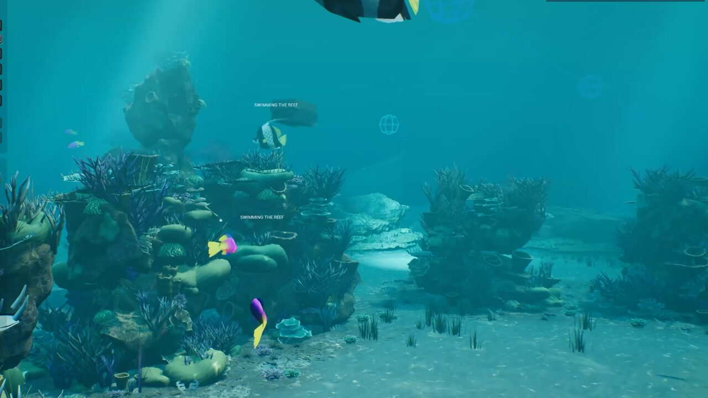
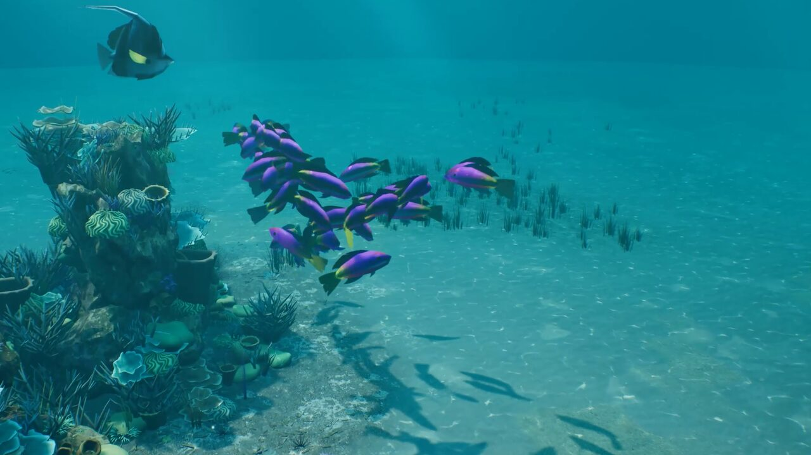
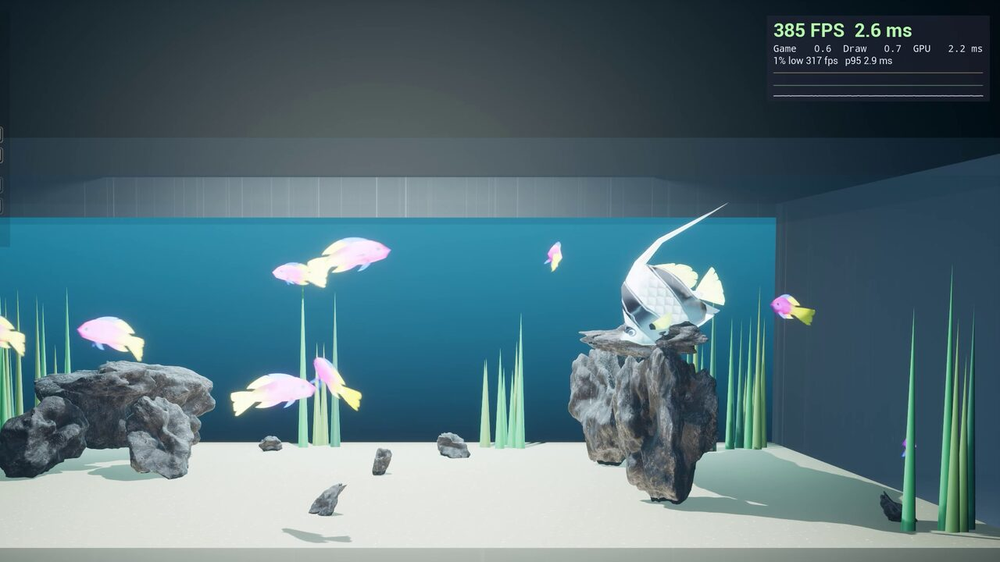
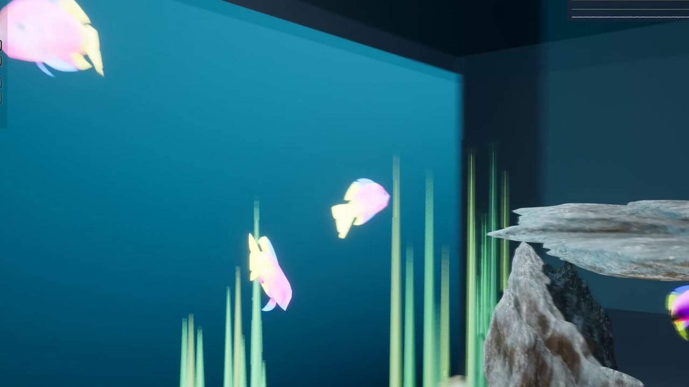
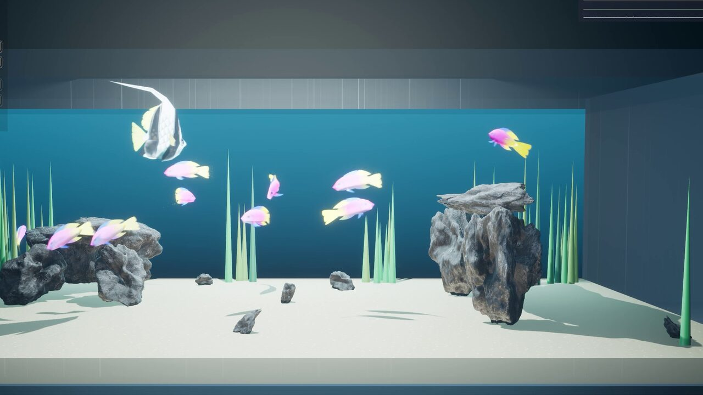

UEDEV / 3D Navigation AI / Underwater · Updated
v3.6.0 Use case · Underwater AI
Underwater and fish AI for Unreal Engine 5
Schools that hold their depth, part round a predator and turn off the glass before they reach it; an ROV that surveys a reef; turtles that settle on the seabed. Swimming agents use the whole water column on true 3D routes, from an open reef to a 120 cm aquarium navigated at 1 cm.
Rated 5.0 out of 5 from3 ratings on Fab- LCM 3D Navigation AI
- Unreal Engine 5.2–5.8
- Smallest voxel
- 0.5cm
- Fish Tank demo voxels
- 1cm
- Mass Entity agents
- 10,000+
- New swim model
- 3.6

The whole water column
A navmesh with a depth offset is a floor plan. LCM 3D Navigation AI routes swimming agents through the full volume (over reefs, under structures and through arches) on genuine 3D paths. Fish inside a Water Volume never swim out of it, and since 3.6 water volumes and overlap-only triggers no longer read as solid to the agents' own checks, so fish find cover and turtles find the seabed.

Fish that swim like fish
Fish keep their depth by pointing the nose instead of sliding up and down, swim upright, school side by side and in layers, and turn away from walls at once. The tail beats with the swimming speed (Tail Beat From Speed in the Flight Config) and a skeletal fish's swim animation plays at the same rate.
A fish slows down so its turning circle fits the way onto its target instead of circling it, and keeps its personal space even with schooling off. Its body size is measured from its meshes.

Schooling, for one pawn or a Mass crowd
Turn on Schooling on a Mass crowd or on a pawn's Flight Movement component and it steers as a school: personal space, collision anticipation, heading matching, and turning away from rocks and glass before reaching them. A few informed fish lead the rest, a predator sets off a fountain escape that spreads through the school, and fish swim in bursts and glides. Distances are in body lengths, so it works at any scale.

An aquarium at 1 cm
Voxels go down to 0.5 cm, and a World Scale profile handles centimetre-scale worlds. The Fish Tank demo navigates a 120 cm aquarium at 1 cm: 8 cm fish through a rock arch and round a predator's lair, in Behaviour Tree, StateTree and Mass editions.

Behaviours under water
The same behaviour library works for swimmers. In the Coral Reef demo an ROV surveys the reef with Scan Area, the school darts into the coral out of its sight with Flee, groupers turn to watch it with Look At, and turtles settle on the seabed with Perch.
See it in the demo levels
These levels are part of the 57 free demo levels you download from inside the editor (LCM Nav3D menu › Get the Demo Levels).
Coral Reef
An ROV surveys a reef; the school hides in the coral; turtles settle on the seabed.
- Scan Area
- Flee
- BT · StateTree

Reef School
A Mass school of forty follows its lead fish round the reef on the flow field.
- Mass
- Schooling

Fish Tank
A 120 cm aquarium navigated at 1 cm, round a hunting predator.
- 1 cm voxels
- BT · ST · Mass
Common questions
How do I make fish AI swim in Unreal Engine 5?
Add LcmFlightMovementComponent to the fish pawn with the Fish archetype, place an LcmNavigationManagerSVO so the water volume is navigable in 3D, and drive it with the Fly To task in a Behaviour Tree or StateTree, or with a Mass trait for a school.
Does it support fish schooling?
Yes, for single pawns and for Mass Entity crowds: personal space, collision anticipation, heading matching, informed leaders, predator escape and burst-and-glide swimming, with distances in body lengths.
Can it navigate a small aquarium?
Yes. Voxels go down to 0.5 cm and a World Scale profile handles centimetre-scale worlds; the Fish Tank demo navigates a 120 cm aquarium at 1 cm.
Do fish stay inside a Water Volume?
Yes. Fish inside a Water Volume never swim out of it, and water volumes and overlap-only triggers are not treated as walls by the agents' own checks.
Read more in the free documentation: